Day 12
Final Matchday in Groups E and F
Group F
Canada v Morocco and Croatia v Belgium
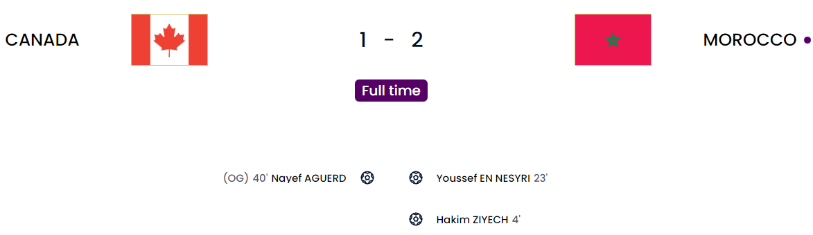
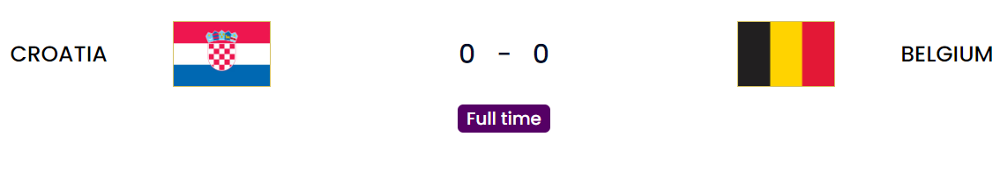
One pretty alright game and one COMPLETE DUD from one of the teams in the other game. I thought Morocco will be able to give a great game to the other teams but never a group topper 😅. It is an amazing show from the African nations. Maybe we could see more teams from AFCON because it is coming up. Don’t sleep on them that’s all. The second game does not deserve the time here because it was YET ANOTHER 0-0.
Match 1
Canada gave it everything but Morocco was just on another level. Bono was back after going off at the start of the last game because of a bout of dizziness. The first came after just 4 minutes with a crazy mistake from the Canada GK. The ball comes through and the keeper rushes forward and takes the biggest of touches and it comes straight to Ziyech who has an easy target to aim at now that the keeper did himself in with that horror touch. CAN SOMEONE CHECK THE BANK ACCOUNT OF THE KEEPER FOR A BIG STACK THAT SHOULD HAVE COME IN? 💰️. Anyways, the next goal was by En Nesyri who finally has a goal in the World Cup. I really thought he could do business for Morocco but hey better late than never and they are in the knockouts as group toppers so amazing work. Morocco got another but it was ruled out for offside and everyone except En Nesyri knew that 🤣….for a while. Canada pulled one back when a cross that came in was deflected off Aguerd for what was the first own goal in this tournament so far. Later on, it was just damage control.
Canada
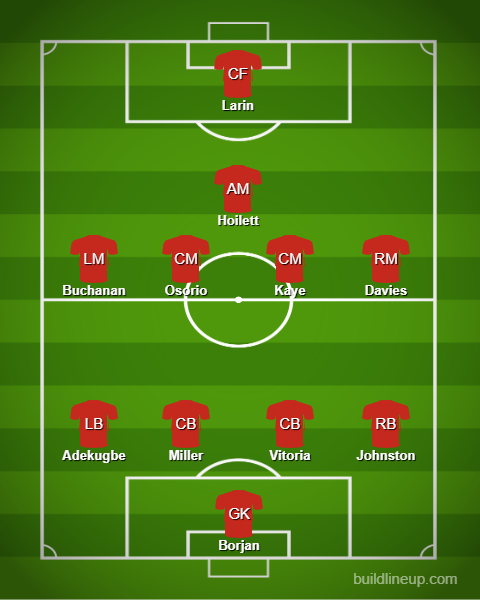
Morocco
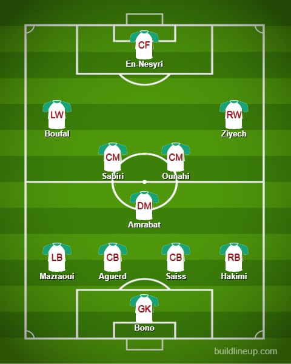
Match 2
I’ll just keep it brief for Croatia. Gvardiol is a different-level beast. No wonder Chelsea want him. He has been a solid rock at just 20. Apart from that nothing major apart from a few chances.
Belgium Belgium Belgium
The major team I wanna bash on which is what I was waiting for because for starters I don’t know how this team of pathetic potato sacks is still number 2 in the world. They have been knocked out and deservedly so. No bad luck of any sort. They were just bad. Everyone does not have the right mentality including even Kevin De Bruyne. Calling out your own national team as too old to the press. I get they’re not your billion-dollar Man City team but why you gotta make that public I have no clue. Apart from that, I thought their squad selection was alright but as always the fault starts at the very top.
Roberto Martinez
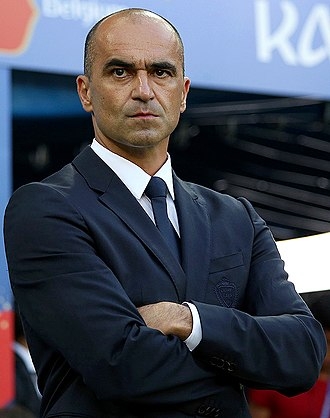
Freshly unemployed after this idiotic campaign(Glory Hallelujah 🙌), this Belgian Baldi is downright arrogant and stubborn to the point where Gareth Southgate actually looks better and you know how much I hate Southgate. This guy you see loves picking absolute 🐌s in his lineup who are in various retirement leagues. Vertonghen and Alderweireld are in the Belgian league. No wonder he keeps picking them. You hardly have to move countries to check others out. You have Faes who has been solid for Leicester so far and he’s rotting on the bench. Tielemans is a top-quality player and has had a great season as well. But Monsieur Martinez is like “Oh i dOn’t wAnNa pIcK HiM BeCaUsE He iS NoT A sNaIl” and instead the fool picks Witsel and Dendoncker for this game who are as fast as a damn 18-wheeler without the 18 wheels. Don’t even get me started on the damn attack. Barring De Bruyne who while he has the quality DOES NOT have the mentality of a champion and is so used to Man City’s oil money squad, the others are a joke. Mertens plays in a Turkish retirement league. Hazard does not have the pace and agility of 4 or 5 years ago. You do not trust the likes of De Ketelaere(Plays for Serie A champions AC Milan) or even Doku who has amazing agility and pace. You still trust Lukaku who was the reason you didn’t even get a goal from this game. No focus on youth and trusting snails. Are you seriously picking snails because they’re the only ones who can keep your unemployed head shiny or what? I seriously don’t get your lineups at all. You got lucky with Canada because you sat back and managed to catch them out. Against the rest, you are just as clueless as they come. Castagne is great going forward and where does he sit: IN THE CENTER OF DEFENSE WITH THE OTHER 2 SNAILS. God this man just infuriates me. This so-called “golden generation” has been thoroughly ruined by this knockoff Sivaji and they are indeed “too old” De Bruyne to win anything unless your damn coach changes up his selection because he had 0 future-proofing.
Croatia
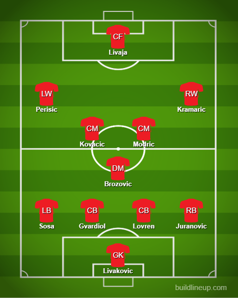
Belgium
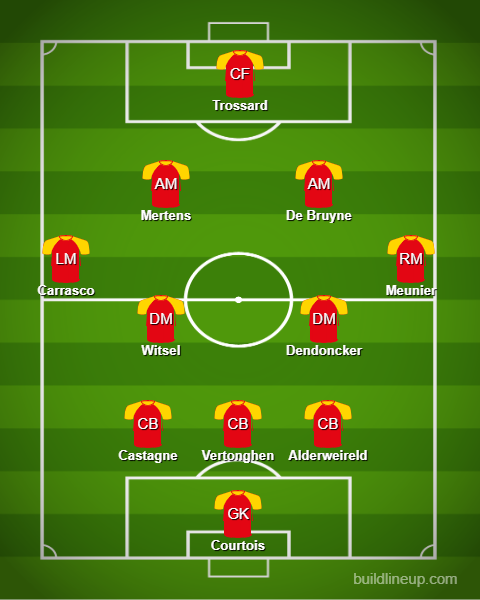
Group F table
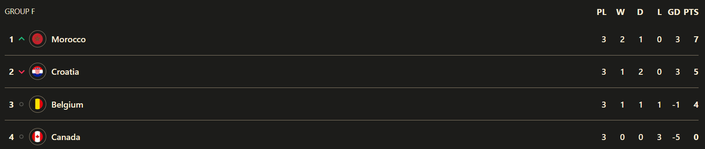
To Roberto Martinez and the Belgium National Team

Group E
Costa Rica v Germany and Japan v Spain
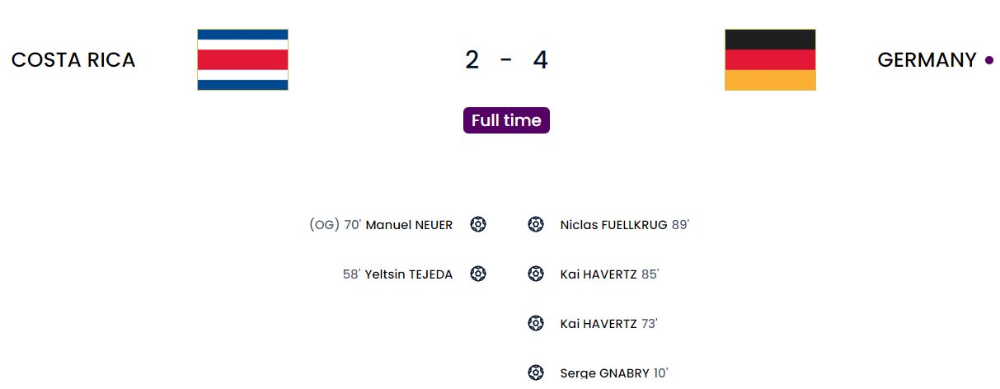
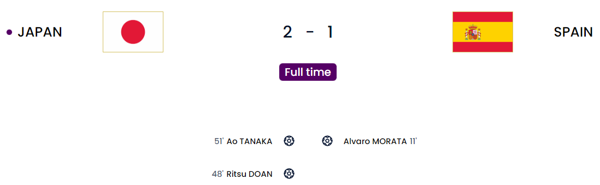
The slightest of margins. The country with the highest xG(Expected goals) out and Spain gets beaten by a side who had only 14% possession 😳. With these results, Japan actually goes through as the group toppers and Spain survives to go second. This means the fixtures are: Spain v Morocco and Japan v Croatia. A historic moment also happened as an all-female refereeing team took charge of the game between Germany and Costa Rica in the men’s World Cup. A massive massive achievement.
Since so much happened in this group I will be combining both matches together to show how crazy the table moved in this final matchday
First Half
10' - Raum with a great cross for Gnabry who heads it home. Germany at this point still isn’t getting out of the group because it is still 0-0 in the other game.
11' - Great cross from Azpilicueta for Morata who managed to finish with a bullet header. Man has only started one game and has the same goals as Gakpo and Mbappe 😅. Now, Spain and Germany are going through at 1 and 2 respectively.
After 1 half, Spain and Germany are going through from the standings with Spain on 7 points and Germany on 4 points and Japan on 3 points.
Second half
48' - Doan manages to pull Japan level after Spain makes a huge hash of playing out from the back. His goal was a bullet outside the box. Hard true and Simon is caught out. Game on. Now it is Spain on just 5 points and Japan are on 4(GD - 0) and Germany stay on 4(GD - 0) so second place is going to be chosen by the number of yellows and all that.
51' - Controversial moment here as Tanaka has scored but the goal is ruled out. Doan first makes a great run and manages to drill the ball in and Mitoma actually hit the ball back in for Tanaka after it ran out of play apparently here. VAR is checking it……and it is a goal. JAPAN LEAD SPAIN through Tanaka. Maybe this moment could be talked about for a long time but Japan don’t care they are celebrating like crazy. Now Japan are going through as group toppers and Spain are now on 4 points but ahead of Germany on the same points by GD and if Spain level it Germany could squeak through.
58' - Bad defending from Germany and Costa Rica have thrown a spanner in the works by equalising now from Tejeda after Neuer makes a meal out of a cross yet again and as usual Germany are second best in getting to the rebound and its 1-1.
70' - It is getting worse for Germany. After missing a slew of chances to go ahead. Costa Rica has managed to score again and I can’t believe I am saying this but JAPAN and COSTA RICA are poised to go through now because they both are on 6 points but Japan are ahead on GD. It was a scramble from the free kick and it looks like the final touch came from Neuer(off his right foot to be precise) so it will be classed as an own goal.
73' - Sane puts the ball in but it was cleared out till Kimmich managed to head to Fullkrug who managed to sneak Havertz in who manages to calmly slot it past Navas. So now Spain is now ahead of Costa Rica on goal difference(Funnily enough that 7-0 win for Spain keeping them alive 😅)
85' - Havertz puts Germany ahead and it was coming after a load of chances including a big chance from point blank range which was saved well by Navas. Gnabry with a peach of a cross to find him. Germany is third now. Unless Spain draws level, Germany ain’t going through and it still is 2-1 to Japan now
89' - Fullkrug makes it 4 and it is the 3 points for Germany but with Spain still unable to find a way to equalize it seems to be all for nothing. A great pass from Kimmich again and Sane sets it up on a plate for Fullkrug who easily scores it.
FT - And breathe 😱. With the results the table looks like this:
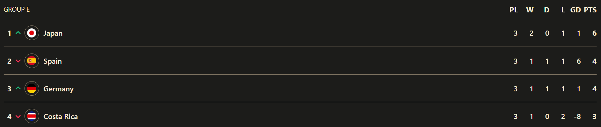
GD bailed Spain out. If they leveled against Japan, Germany would have gone through. A former Barcelona manager knocks out a former Bayern manager. You love to see it 😆
Lineups
Costa Rica
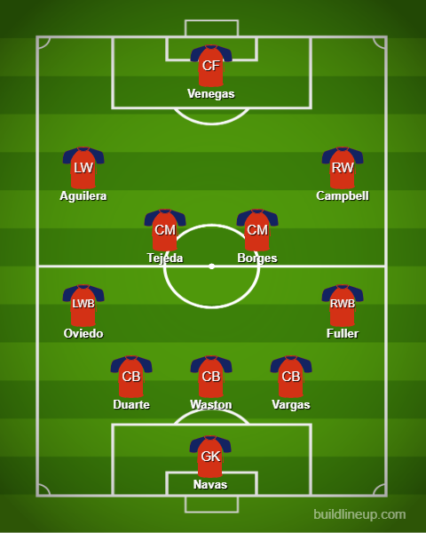
Germany
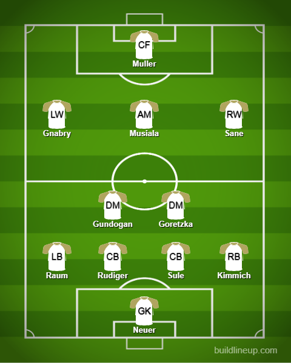
Japan
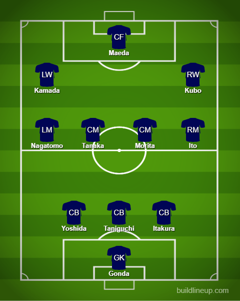
Spain
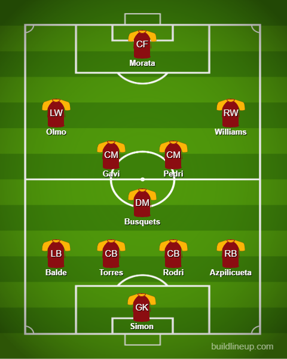